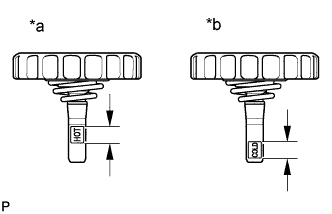
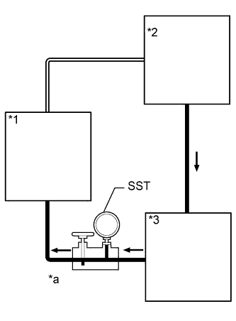

ЛОПАСТНОЙ НАСОС (для моделей с 2TR-FE) > ПРОВЕРКА БЕЗ СНЯТИЯ С АВТОМОБИЛЯ |
| 1. ПРОВЕРЬТЕ ПРИВОДНОЙ РЕМЕНЬ |
Осмотрите приводной ремень и убедитесь в отсутствии износа, протирания волокон и т.д.
При обнаружении каких-либо дефектов замените ремень.
| 2. УДАЛИТЕ ВОЗДУХ ИЗ СИСТЕМЫ РУЛЕВОГО УПРАВЛЕНИЯ С УСИЛИТЕЛЕМ |
Проверьте уровень жидкости.
Поддомкратьте переднюю сторону автомобиля и установите ее на подставки.
Поверните рулевое колесо.
При выключенном двигателе медленно поверните рулевое колесо между мертвыми точками несколько раз.
Опустите автомобиль.
Запустите двигатель.
Дайте двигателю поработать на холостом ходу в течение нескольких минут.
Поверните рулевое колесо.
Во время работы двигателя на холостом ходу поверните рулевое колесо влево или вправо до упора и удерживайте его в таком положении в течение 2-3 с, затем поверните в противоположном направлении до упора и удерживайте его в этом положении также в течение 2-3 с.*1
Повторите операцию *1 несколько раз.
Выключите двигатель.
Проверьте отсутствие вспенивания и эмульсификации.
| *a | ПРАВИЛЬНО |
| *b | НЕПРАВИЛЬНО |
Проверьте уровень жидкости.
| 3. ПРОВЕРЬТЕ УРОВЕНЬ ЖИДКОСТИ ДЛЯ МЕХАНИЗМА РУЛЕВОГО УПРАВЛЕНИЯ С УСИЛИТЕЛЕМ |
|  |
Поставьте автомобиль на ровной поверхности.
| *a | Интервал "HOT" |
| *b | Интервал "COLD" |
После остановки двигателя проверьте уровень жидкости в расширительном бачке.
При необходимости долейте жидкость.
Запустите двигатель на холостом ходу.
Для повышения температуры жидкости поверните рулевое колесо из одного крайнего положения в другое несколько раз.
Проверьте отсутствие вспенивания и эмульсификации.
| *a | ПРАВИЛЬНО |
| *b | НЕПРАВИЛЬНО |
Во время работы двигателя на холостом ходу замерьте уровень жидкости в бачке.
| *a | Холостой ход двигателя |
| *b | Двигатель остановлен |
| *c | 5 мм или менее |
Выключите двигатель.
Подождите несколько минут, после чего снова замерьте уровень жидкости в бачке.
Проверьте уровень жидкости.
| 4. ПРОВЕРЬТЕ ДАВЛЕНИЕ ЖИДКОСТИ В СИСТЕМЕ РУЛЕВОГО УПРАВЛЕНИЯ С УСИЛЕНИЕМ |
Отсоедините нагнетательный патрубок от лопастного насоса.
Подсоедините SST, как показано на рисунке ниже.
| *a | Впуск |
| *b | Выпуск |
| *1 | Переходник |
| *2 | Нагнетательная трубка |
Удалите воздух из системы рулевого управления с усилителем.
Запустите двигатель на холостом ходу.
Для повышения температуры жидкости поверните рулевое колесо из одного крайнего положения в другое несколько раз.
При работе двигателя на холостом ходу закройте клапан SST и снимите показания SST.
| *1 | Механизм рулевого управления с усилителем |
| *2 | Бачок для жидкости для механизма рулевого управления с усилителем |
| *3 | Лопастной насос системы рулевого управления с усилителем |
| *a | Клапан закрыт |
На холостом ходу двигателя полностью откройте клапан.
| *1 | Механизм рулевого управления с усилителем |
| *2 | Бачок для жидкости для механизма рулевого управления с усилителем |
| *3 | Лопастной насос системы рулевого управления с усилителем |
| *a | Клапан открыт |
Замерьте давление жидкости при частоте вращения коленчатого вала двигателя 1000 и 3000 об/мин.
|  |
На холостом ходу двигателя и при полностью открытом клапане поверните рулевое колесо влево или вправо до упора. Снимите показания SST.
| *1 | Механизм рулевого управления с усилителем (в положении блокировки) |
| *2 | Бачок для жидкости для механизма рулевого управления с усилителем |
| *3 | Лопастной насос системы рулевого управления с усилителем |
| *a | Клапан открыт |
Отсоедините SST.
Подсоедините нагнетательный патрубок к лопастному насосу.
Удалите воздух из системы рулевого управления с усилителем.